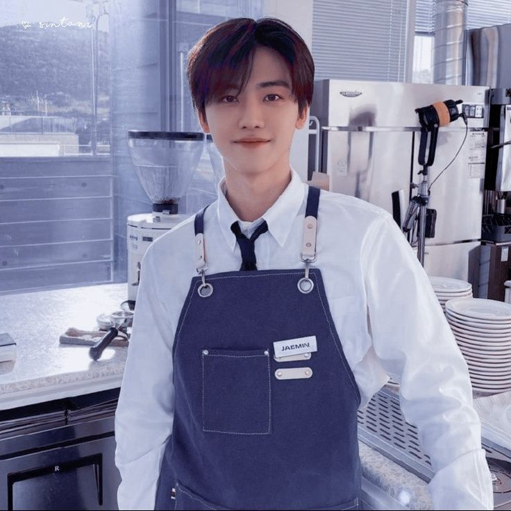

Tentang Kami
Filaz Nastar adalah UMKM yang berfokus pada pembuatan kue nastar premium dengan bahan berkualitas tinggi. Kami berdiri sejak tahun 2020 dan terus berkembang dengan semangat untuk menghadirkan cita rasa yang khas Indonesia dalam kemasan modern dan elegan.
Visi Kami
Menjadi brand nastar premium pilihan utama masyarakat Indonesia yang mengutamakan rasa, kualitas, dan kepercayaan pelanggan.
Misi Kami
- Menggunakan bahan baku terbaik dari petani lokal.
- Menjaga standar kebersihan dan cita rasa dalam setiap proses produksi.
- Mendukung pemberdayaan masyarakat melalui pelatihan dan lapangan kerja.
- Berinovasi dalam produk dan kemasan agar selalu relevan dengan pasar modern.
Profil Pemilik

Jemmy Na — Pendiri sekaligus pemilik Filaz Nastar. Dengan latar belakang di bidang kuliner, Jemmy memulai usahanya dari dapur rumah dan kini telah berkembang menjadi salah satu produsen nastar premium dengan pelanggan setia di berbagai kota.